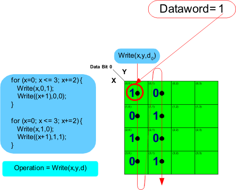

Checkerboard data sequence for two columns
In the figure below, a second for loop is added to operate on the second column. To create a checkerboard data sequence the data in the second column must be inverted from the first column. In the second for loop the y address is hard coded to a 1.

To finish stepping through the rest of the addresses in the memory core is a repetition of the pattern code that operates on the two columns in the previous figures.